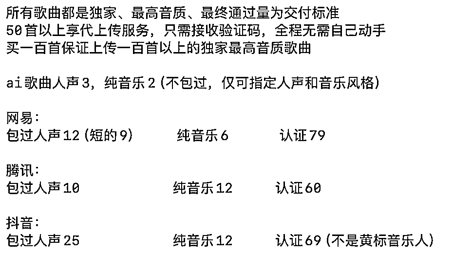
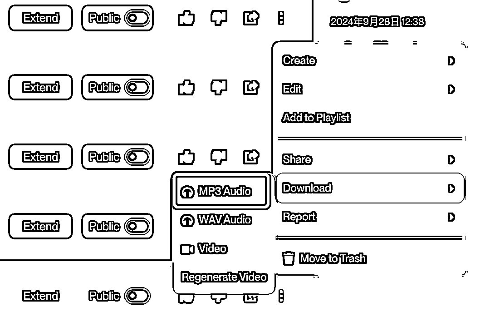
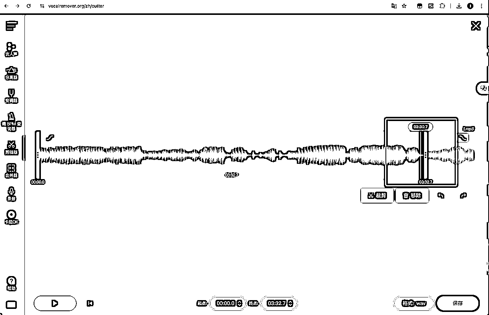
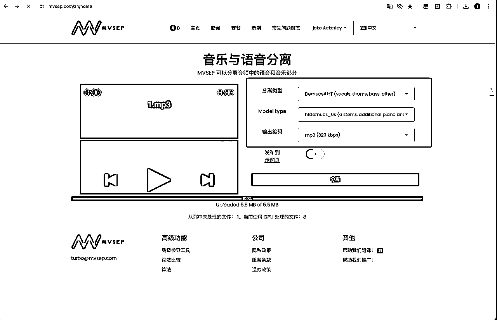
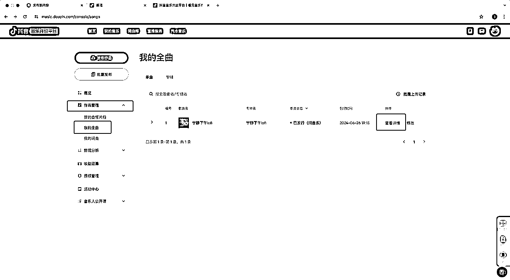
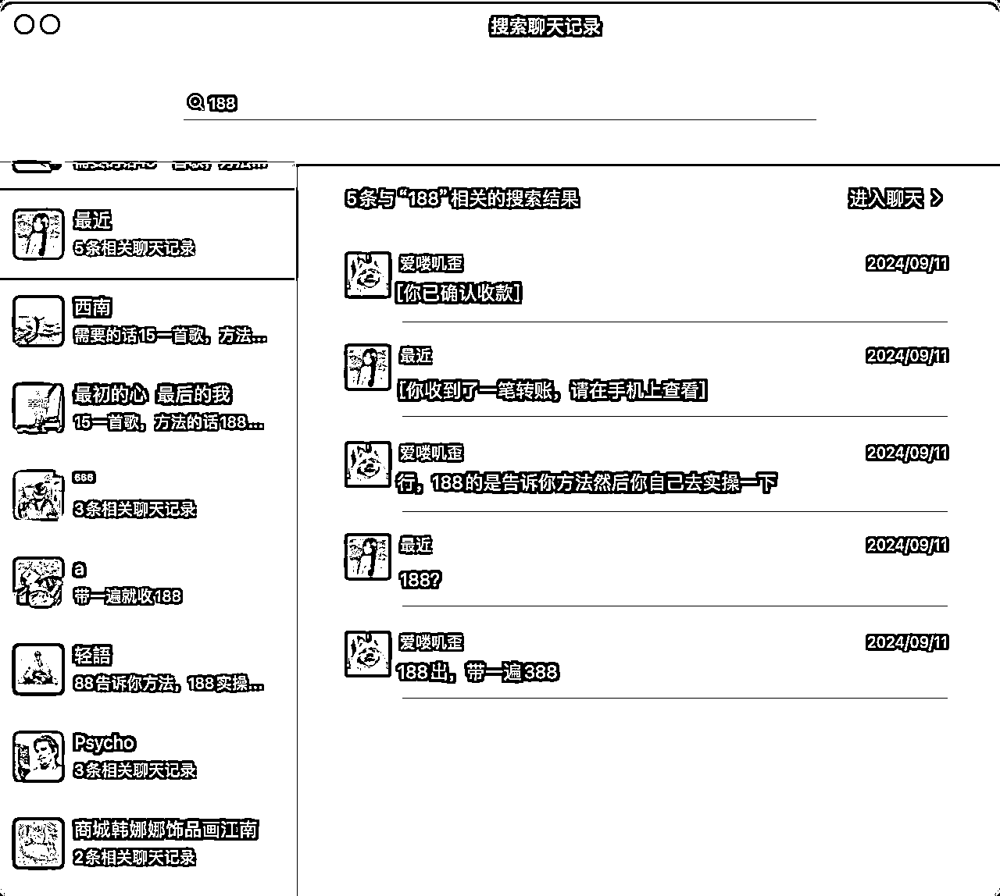
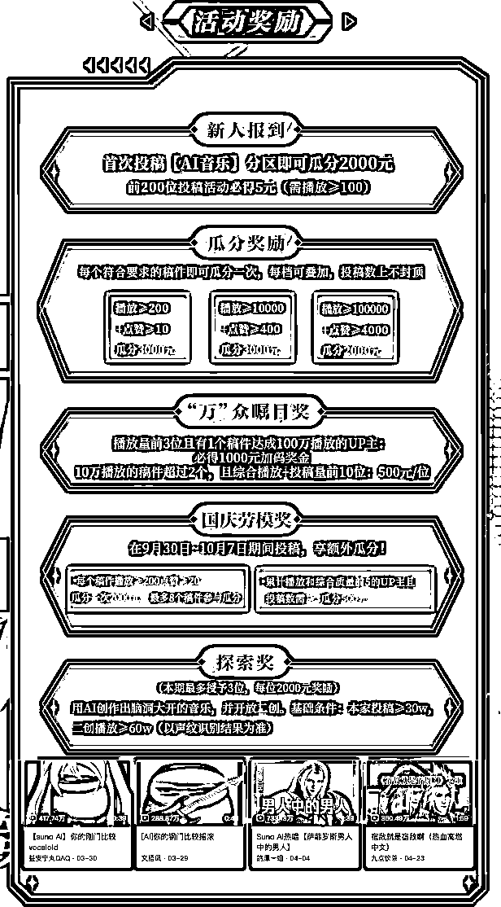
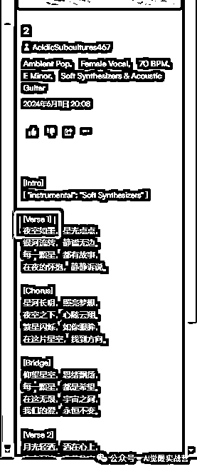

来源：https://btr2ioqltz.feishu.cn/docx/MbZvdSu3loOi7gxUasVckMcBni4
爱喽叽歪，持续探索AI音乐变现路径。
自从三月份 suno 的出现，ai 音乐迎来了一个新的篇章，自然语言生成好听的音乐。
我是在四月份接触的 suno，在 suno 功能性、作品质量都还欠缺的情况下，摸索了半个月，五月份开始，我靠着 suno 赚到了一点点收益，这是我近期的收益情况，增长的很稳定。
大部分人对 ai 音乐的印象其实非常差，即使到九月份，ai 音乐的作品也不能让大部分人满意，达不到“发行级”的出品水准，于是我们只能降低标准，将目光投向对音乐品质要求没这么高的应用场景上——音乐人认证。
网易云与 QQ 音乐的音乐人都是可以通过日常任务领取平台的会员，那么一个“终身”永久的平台会员只需要 60～80 元，这个费用在很多人看来还是很香的，还有少部分人为了自己的装 X 需求，也会买一个音乐人的头衔。
这里面部分的收益来自音乐人认证，正常的音乐人认证需要上传一首“原创歌曲”，音乐的学习成本其实非常高，小白从零开始一个月的时间才能做出一首达到上传标准的歌曲。
AI 音乐的出现解决了原创歌曲这一难题，让音乐人认证变得非常轻松。
这里我根据三个平台认证工作量和难度对三个平台进行了价格划分，还有后续歌曲的上传做的一个价格表，大家可以参考一下，价格越高，工作量和难度越大。

从四月份到九月份，平台规则不断限制 AI 歌曲的上传，这里给大家简单讲一下平台的审核变动历程。
从四五月份 AI 音乐蛮荒时代，平台还没有太多的限制措施，AI 音乐可以当作原创音乐进行使用，直接上传到平台是没有任何问题的。
直到七月份，大量的 AI 歌曲对平台造成了一定的冲击，平台开始打击、限制 AI 歌曲的上传，但是通过转换格式与制作音乐分轨，AI 歌曲还是可以正常上传到平台，直到八九月份……
腾讯率先发力，所有被检测出来的 AI 歌曲，都无法签约，只能通过审核。（不签约没有版权收益，等于你把自己的歌放在平台上让其他人白嫖）
紧接着是抖音（汽水）音乐，严格限制 AI 歌曲的上传，客服公开声明不会接受任何 AI 的歌曲，对于 AI 歌曲的检测达到了变态的程度，即使专业的音乐人使用 AI 歌曲去上传也很难通过审核。
接下来是网易，网易不仅认证变严格，上传歌曲后还会进行二次检测，今天上传，第二天就把低质量的歌曲下架了。
但是高质量的 AI 歌曲还是能在三个平台畅通无阻，所以一首歌的价格，从四五月份的 2～3 块钱，一路暴涨到二十多块钱，现在慢慢的跌倒了十几块钱。（直接生成的、不经人工筛选的歌曲很难通过了，AI 直接生成的十首大概只能通过两三首）
从这平台的发展我们也能看出，平台对于 AI 音乐其实是允许上传的，网易的 suno 音乐专区、腾讯的 AI 作词作曲、抖音自己开发了一个 AI 音乐生成，三家平台都对于 AI 音乐有一定的开发，未来的大方向肯定是支持 AI 音乐的。
但是平台不喜欢直接将 AI 生成的结果直接输出到平台，低质量的 AI 歌曲已经被平台淘汰了，接下来平台还会对 AI 音乐进行大范围的限制，确保只有优质的 AI 歌曲能上传到平台。
这里推荐大家先拿腾讯音乐人进行练手，因为腾讯音乐人不限制上传次数，经过几十次的尝试，也是琢磨出了 100%通过的办法，长达一个月的摸索，接下来全流程分享给大家。
首先我自己是用人声通过的腾讯音乐，下意识的以为别人也可以用人声歌曲去通过，尝试了十几位，只有几位能成功通过，大部分都无法通过人声歌曲去成功通过认证。
后来尝试了用纯音乐，发现一过一个准，这里面主要的难点就是对纯音乐进行原创证明的制作。（纯音乐必须上传原创证明）
原创证明包含：音乐分轨/版权证明/工程文件/授权证明/其他平台后台截图选一个上传即可
那么纯音乐的制作，在 suno 只需要勾选上伴奏按钮（instrumental）就可以制作出纯音乐，制作完成后选择一首好听的，进行下载，好听与否是主观判断，没有固定标准。
WAV 下载需要会员才可以，免费的只能下载 MP3，待会将 MP3 转格式成 WAV 就行。

纯音乐的制作除了 suno，也可以使用抖音海绵、网易天音、Udio、盗版 suno 这些国内可以访问的 AI 音乐网站进行制作。
打开 udio 网站：https://www.udio.com/，右上角选择登陆，直接选择邮箱进行注册，国内的 QQ 邮箱即可，登陆后按照下图步骤进行点击，第三步可以多点几个标签，让音乐更复杂一点。
生成好后，选择需要下载的歌曲，进行下载，还是只下载 mp3 格式的歌曲。
接下来打开 https://vocalremover.org/zh/splitter-ai 这个网站对音频尾部进行处理，suno 生成的尾部经常会多出来一段或者没生成完整，需要裁剪并且淡出。
按自己的音乐品味进行裁剪和淡出，让结尾没有“截断感”。

完成后右下角保存音频即可，建议选择 MP3，因为接下来要做分轨，文件太大了不好上传。
接下来是制作原创证明，需要制作纯音乐的音乐分轨，打开这个网站：https://mvsep.com/zh/home，一定要登陆！
登陆后队列只有几位排队的，不登陆需要排几个小时，参数选择如下图（严格按照参数来，WAV 的输出编码会让分轨文件压缩包太大，导致无法上传）

生成好后收听除了（vocal）和（Instrumental）的其他文件，如果有声音就下载下来，最后将下载的文件进行压缩打包，就是原创证明压缩包了。
以下是压缩包的内容，建议上传三条及三条以上的音乐分轨压缩包，如果分轨少于三条，平台大概率会判音乐过于简单，不予通过。
接下来是转格式，现在上传的歌曲在平台只是 SQ 的品质，如果将歌曲转成 48000 采样率和 24 位深度以上的规格，歌曲在平台会是 Hi-res 品质，这是一个小噱头，同时也能提高上传通过率。
打开这个这个网站 https://www.freeconvert.com/zh/mp3-to-wav，上传文件后选择参数设置与图片相符即可。

最后，我们得到了以下文件一个超大的。wav 歌曲文件，和一个有着音乐分轨的压缩包，分别为歌曲文件和原创证明
接下来打开腾讯音乐人平台：https://y.tencentmusic.com/#/home 选择音乐人下面的立即入驻，实名完成后选择发布原创。
歌曲上传选择刚刚的 1.wav 歌曲文件，其他参数框中的才需要进行点击或填写，没框的都保持默认，等歌曲上传完成后再点击下方的创建新专辑，专辑里面相关的东西都会自动填写好，如果没有填写好就正常填写即可。
剩下的免费听片段/全曲就是这首歌是不是需要会员才能收听，独家歌曲是这首歌只能在腾讯进行发布，非独家是可以在腾讯以外的平台进行发布，全球发行，AI 歌曲只有纯音乐才大概率能签约上，人声歌曲基本无法全球发行。
全球发行不影响上架、审核、签约，签约上了播放就会有收益。收益与会员付费播放收听率有关，具体数值官方没有公布，一千播放在 0.1～4 块钱之间，因人而异。
抖音音乐人限制上传次数是五次，如果入驻五次不通过，平台会将账号拉黑，拉黑后无法申请入驻。
抖音音乐人与腾讯音乐人一样，使用纯音乐进行上传，纯音乐的制作方式参考上面腾讯音乐人的歌曲制作流程，这里节约篇幅就不赘述了。
抖音音乐平台地址：https://music.douyin.com/，选择音乐人入住，身份里选择原创音乐人，其他信息正常填写。
发布作品选择发布全曲，信息填写参考下图
上传歌曲后，需要填写的依旧是红框内的内容，没框选的地方不需要填写，抖音的选择非独家比较容易过。
等待审核通过后再进行下一步，大约一天的时间。

抖音音乐平台地址：https://music.douyin.com/，回到审核后台，查看私信，点击私信的歌曲审核通过消息，在弹出的窗口中点击“立即认证”。
在认证页面，选择“抖音音乐人”认证，使用手机抖音扫码进入身份资料上传页面，按照要求上传和人脸识别信息。
在最后一步只填写带 * 的信息，只需要上传一张作品证明的拍摄照片（下方有）即可。

时间记得修改为当天时间。
如何进入下图页面，选择作品管理-我的全曲，查看歌曲详情即可进入下图页面。
书写内容：自己名字+当天时间+“申请认证抖音音乐人”，建议将右上角用户点开。
如何查看自己审核是否通过？
在抖音我的主页，选择右上角 三道杠，选择最下面的设置，选择账号与安全，在下方选择申请官方认证，右上角选择我的认证（大概率是身份证没拍好，请找一位好友辅助拍摄）

为什么我的不是黄标音乐人？
因为抖音七月份后就严格限制了黄标音乐人的认证，黄标音乐人又称为荣耀认证，需要的条件可以看下图，除了粉丝与作品要求，还可以通过平台签约这条路进行黄标音乐人的认证。
网易云音乐人限制上传次数是三次，如果入驻三次不通过，平台会将账号拉黑，拉黑后无法申请入驻。网易云一共需要两次上传才能通过，第一次上传歌曲，第二次上传露脸视频。
网易的审核是最奇怪的，有时候专业音乐人也会吃瘪，首先他对网络环境要求很高，如果一台电脑已经认证过网易云音乐人，哪怕开了无痕浏览，第二个音乐人申请一提交就会被拉黑。
其次他检测第三方代入驻非常严格，只要露脸视频眼神乱瞟，基本就被判第三方代入驻。
所以推荐大家先通过以上两个平台认证，如果不小心被拉黑了可以通过给客服投递两个平台的后台截图向客服证明自己的创作能力，从而申诉解除拉黑。（看客服心情，不一定能成功）
首先网易云非常不推荐用纯音乐去进行认证，因为 AI 做出来的歌曲无法获取工程文件，并且分轨文件在网易云当作原创证明经常不给通过，所以推荐走翻唱路线去进行网易云音乐人认证。
这里先打开网易云后台：https://music.163.com/#/creatorcenter?module=creatorcenter，先进行申请，
选择网易云音乐人，选择歌手/唱作人，实名完成后点击发布作品-发布歌曲-普通专辑，在这个页面随便上传一首歌曲，然后歌曲类型选择“翻唱”，
在下面的原唱信息中，输入想要翻唱的歌曲，如果关联不到原唱，就说明该歌曲网易云没有版权，如果你翻唱了，百分之百通过不了。
同样的，置灰的也无法进行翻唱，请不要头铁。并且接下来的伴奏选择也要与原唱一致，选择原版伴奏。
这里我们选择信乐团的海阔天空进行翻唱，请选择与歌手匹配的版本，不要选择 live 版或者 3d 版之类的
演唱完成选择效果中的原声或者录音棚，并且调整人声音量与伴奏音量，尽量不要让人声太大或者伴奏太大，保持一个舒适的听感。
如果有喷麦、破音、杂音请重新录制。选择生成作品的私密上传，然后来到作品详情页，点击右上角的下载作品，下载视频无需开通 VIP。
接下来是转格式，mp3 的音频上传到平台会显示上传失败，需要转换一下格式。
打开这个这个网站 https://www.freeconvert.com/zh/mp3-to-wav，上传文件后选择参数设置与图片相符即可。
接下来回到网易云后台上传转换好的 wav 文件，只需要填写或选择三个红框内的信息，歌曲名需要带上“海阔天空”。
后缀可以加点翻唱的标识，这个不影响通过率，然后在页面上方，新建一张专辑，专辑需要一张图片（自己准备），专辑名称和专辑描述随意填写，不影响通过率。

接下来一直下一步即可，最后收到验证码之后就成功上传了。
等待半天后，会提示需要露脸视频认证，或者实名信息与账号实名信息不符，这两个都是需要在第二次上传中的原创证明里上传露脸视频。
露脸视频的上传位置如下图，露脸视频的要求：视频时长 30-40s，一定要大于 30s，视频拍摄主角为实名人本人，拍摄时眼神不要左右瞟。
拍摄文案：审核你好，我叫 XXX（实名信息），我翻唱了 XXX（歌手名）的一首歌叫 XXX（歌曲名），（如果时间不够可以抒发一下自己的感情，我非常喜欢这首歌，这首歌陪我很个夜晚）接下来我清唱一段。
（不要频繁偷瞄文案，眼睛盯着镜头）
原创证明上传压缩包，是压缩包不是视频，zip 或者 rar 的格式，将视频压缩成压缩包再上传即可。
除了用 AI 音乐去制作音乐售卖，AI 音乐的技术同样也可以进行售卖。
整理了 suno.wiki 的知识以及自己在创作过程中遇到的问题，与解决办法，写了一份小报童，累计销售 407 份，大多数是在 5～7 月份销售的。
认证流程里面的很多步骤，看似多余，实际上是经过很多次碰壁才摸索出来的，还是有非常多的人不知道怎么上传成平台的最高音质，还有通过率低怎么改善，这其中有非常多的人愿意付费求教，金额从 88～388 不等。
这里面其实是对平台规则的熟悉，新了解到 AI 音乐的不清楚平台上传的规则，如何制作高质量的 AI 音乐是根本，通过不断叠加的小技巧，才能让 AI 歌曲成功上传到音乐平台。

五月二十号，六月一日这两个特殊的节日销售了三笔原创歌曲定制，一单 100 与两单 88，花了一天时间进行交付。
主要时间花费在与客户沟通和生成歌词初稿，音乐风格都使用的钢琴为主导的流行风格，那会的 suno 还是 V3 版本，需要花较多的时间进行续写的抽卡，因为投入产出比不太合理，所以没有接着往下做。
现在海绵音乐的人声大部分人都是可以接受的，用这个去写一些生日礼物、店铺歌曲、小情歌都是非常不错的方向，等 AI 音乐迎来新的技术进步，我应该也会朝着这个方向靠近。
（由于时间过于久远，找不到图了，等Ai音乐技术进步会再次尝试定制歌曲！）
这两个掌握了技术还没有好好引流，帮别人做过几个模型，收费在 150～300 之间，主要是训练 RVC 的模型。
实际上客户训练完，没有特别好的效果，基本上就是图一乐玩一玩。因为 AI 翻唱效果要特别好需要你的训练素材涵盖高中低频。
自己得会唱歌，然后才能训练出一个能唱出高音、中音、低音的好的声音模型，这就有点尴尬，一般找我训练模型的都是不会唱歌，想让 AI 代唱的，所以训练出来的效果都不大好。
以下是我给客户发的训练素材的要求，大家可以参考一下。
不要夹着唱！不要压着唱！敞开了唱！大白嗓也可以！ 录音必须包括：低音 中音 高音 假声 假声高音（头声）假声低音（气声） 这些音调尽量录全！多录自己舒适音域的歌曲！！！ 所有录音必须录干声，吐字清晰，不带伴奏和混响，麦克风清晰，不可喷麦，破音，杂音 底噪都会影响模型质量！ 经常喷麦就离麦克风两拳，给麦克风包一层纸巾，牺牲一点收音换取不喷麦。 录几首歌嗓子哑就休息一会，沙哑录音影响质量，唱歌前先开嗓，避免夹着嗓子唱！！！ 注：制作模型默认给我授权你声音合法范围内的使用，如不同意请告知。
当然，除了给自己训练声音模型，还可以给一些明星或者自己喜爱的人物进行声音模型训练，例如最近很火的“赛马娘曼波”，其实用的就是RVC翻唱
找到热门视频，再通过RVC的音频推理直接就能获得不会判搬运的音频素材，给音频素材配上合适的画面就成了原创的热门爆款视频了。
还有非常卷的影视赛道，出现了使用ACE studio的翻唱解说，一条视频斩获127W点赞，低粉爆款视频，如果大家感兴趣后续还会对这两个账号做一期技术拆解。
比赛的奖金还挺可观，自媒体平台的比赛一般在 1～3W，社群的比赛一般是 1k～3k。
参加了五六次比赛，每次都是一些边角奖励，拿了两个抖音的周边，还有一个社群的 100 块参与奖。看起来没得到多少，实际上投入产出比非常高，比赛获奖带来的名气是隐形资产，方便日后变现的。
还有能认识很多做 AI 音乐的朋友，一起交流能带来更多的灵感，如果能搭建起自己的小圈子，对以后在音乐圈里面发展是特别有利的。

使用Suno音乐歌词创作专家先创作一首普通歌曲

这首歌曲我们想让它是女生演唱，在音乐风格中加上Female Vocal即可
案例：
https://suno.com/song/21db1caa-ecc5-4982-95fb-f26bdb09cae4
这首歌曲我们想让它是男生演唱，但是生成偶尔会出现女生，可以在歌词中也加上Male Vocal 进行一个关联性更强的联动，以保证整首歌都是男声演唱。
案例:
https://suno.com/song/0eff19e6-3561-43ac-b734-dcfca88cf946
这首歌曲我们想让它是男生和女生对唱，可以在歌词中加上Male Vocal和Female让对应歌词为对应人声演唱，但是当前方法非常不稳定，不推荐使用
案例：
https://suno.com/song/380dd1e6-8d0e-44d3-8709-7ed1a3c49a74
可以尝试在音乐风格中加入下列音乐风格
"Duet" 翻译成中文是 "二重唱"。
"male and female duet" 指的是 "男女二重唱"
"romantic duet" 可以翻译为 "浪漫的二重唱"
案例：
https://suno.com/song/1d38190d-8724-4a80-b712-14c418a602ab
总结：可以在音乐风格中进行“全局设置”输入female vocal控制整曲生成为女音，也可以在歌词的某一段输入“male vocal”使得该段的演唱为男音，或者在音乐风格中输入“male and female duet” 让ai根据歌词随机划分男声女声，目前suno手册中明确说明，对唱或者男女合唱生成并不稳定，需要消耗大量的积分进行抽卡。
使用Suno音乐歌词创作专家先创作一首普通歌曲
音乐风格：
Chinese Traditional, Male Vocal, Guzheng & Chinese Flute & Drums, Mandarin
歌词：
[Intro]
[ "Introduction Time": "10s" ,"Instrumental":"Soft Strings & Bamboo Flute" ]
[Verse 1, Soft Strings]
五月端午，粽叶飘香，江水悠悠，龙舟竞渡。
[Verse 2, Bamboo Flute]
艾草青青，挂门前，五色丝线，系手腕。
[Chorus, All Instruments]
端午佳节，思念绵绵，屈原精神，永流传。
[Bridge,Soft Strings]
粽香四溢，家家团圆，龙舟竞渡，激荡心弦。
[Verse 3, Bamboo Flute]
历史长河，屈原沉江，忠魂不灭，精神永存。
[Chorus, All Instruments]
端午佳节，缅怀先贤，龙舟鼓声，激扬青春。
[Outro]
端午情，粽香情，端午情，民族情。
[End]
听一听上述歌词生成出的歌曲效果
https://suno.com/song/07746056-d375-4e7e-bc44-e7428432c85d
以下是写好的一段rap：
龙舟飞驰，划破云端，江水翻滚，热血沸腾，
家家户户挂艾草，五色丝线保平安，
纪念屈原，忠诚永远，中华文化不曾改变，
端午精神传四海，千秋万代铭心间。
将这段rap加上[Rap Verse, trap, male vocal]插入到歌词中，一般插入在副歌后生成概率比较高
案例：
https://suno.com/song/1d46fc50-f8d3-413d-8fc7-8f964bf3000b
将这段rap加上[Rap Verse, hiphop, male vocal]插入到歌词中，一般插入在副歌后生成概率比较高
案例：
https://suno.com/song/95fe9aef-3cc8-40c3-afea-1c5ce3382928
总结： 加上[Rap Verse, rap风格, 人声]即可生成一段rap主歌，这里的人声也可以是一些有特色的人声，例如：sultry male singer（性感男歌手），rap风格里面可以是hiphop，trap这些常见的rap类型，其他更多风格还等着大家去发掘。
老样子，先用Suno创作专家生成一首普通参照歌曲。

案例：https://suno.com/song/76bc26b8-2aa2-4d9f-8a9b-e4126963a4cb
这首歌的开头唱的非常糊，开头两个字几乎是听不出是夜空，并且唱多了好几个字。
方法一：在开头多加一个字，这方法在V3的时候很好用，但是现在似乎唱的太清晰了，反而不好用了。可以加：看、在、听等不影响句意的单字，第二段主歌可能也需要加多一个字使得段落之间字数跟工整。
案例：https://suno.com/song/bc88f974-2f81-4520-ba98-599748b03799
可以听到，这次将“看夜空”三个字都唱好了，适用于可以添加歌词的情况，如果不愿意修改歌词可以尝试一下后面的方法。
方法二：给歌手声音加一个形容词，有概率唱准，从完全不准，到勉强能听，有几率直接唱的很标准，这个方法不需要修改歌词。

案例：https://suno.com/song/eb379910-df7d-46dc-a77f-ac0b5920a512
可以减少唱糊的感觉，但是建议与方法一或者方法三一起使用，效果更佳~
方法三：将歌词的开头词汇修改成相近的词语，例如歌词中的“夜空” ，我修改成“夜晚” ，在歌词字数不变的情况下，将开头唱糊的情况修改过来了。
案例：https://suno.com/song/c9ed8a40-6c83-4aad-8b0e-636b84e38878
这次“夜晚”发音很标准，可以猜测到，其实suno有部分词汇是发音不准或者说不适合放在歌曲开头的，可以尝试替换掉这些词汇，从而生成一首没有唱糊的歌曲。
方法四：将开头的第一个字用拼音进行表示，如：夜空如墨，可以写成ye空如墨
案例：https://suno.com/song/6f9f3a7c-8b2b-46fb-93d1-2052754f17de
成功率最高的方法，大家可以多多使用这个方法，用拼音去替代唱糊的字。
结合方法二和方法三生成的歌曲，大家可以试听一下，最开始的感觉到现在吐字清晰的感觉。
案例：https://suno.com/song/30d6d7a7-f9bf-4245-aab3-af723e1c0034
总结：唱糊大概率和歌词有关，通过修改歌词或者增加、减少歌词都可以使得唱糊的情况大大改善，还可以通过修改人声的形容词减少唱糊的概率。
上传歌曲时出现：需要工程文件验证，这时候参考腾讯音乐人认证教程中的分轨制作，将分轨文件打包上传到歌曲的原创证明中，即可让审核失败的歌曲通过审核，成功上架。
Q：怎么提交演唱视频/分轨文件/授权证明？
A：您好，目前第一次上传作品的时候没有提交证明文件的入口，审核不通过后，上传入口才会开启，您可以将相关文件上传到原创证明位置辅助审核~
Q：审核被拒提示歌手信息错误，具体是哪里错误，应该怎么填写？
A：您好，如歌曲被拒提示“歌手信息错误”，建议您检查歌曲信息内歌手位置是否关联本人；目前不支持上传非本人歌曲，确认是本人作品，建议您直接勾选我是演唱者，之后提交审核再试~
Q：为什么网页端上传作品页面打不开/白屏/没反应/加载不出来？
A：您好，建议您切换网络，确保网络环境流畅，之后使用谷歌浏览器打开官网再试一下~
Q：成为音乐人后需要每月都发作品吗/发作品频率有要求吗/长时间不发作品会被取消身份吗？
A：您好，音乐人没有作品发布频率要求哦，您可以在您想上传的时候随时上传，建议您用心经营音乐人账号~
Q：能否上传以前上传过但是已经下架的歌曲？
A：您好，目前平台不支持上传重复作品，如该作品目前已下架，是可以重新上传哦，辛苦您以审核结果为准~
Q：成为音乐人后有什么推广歌曲的方式？
A：您好，您可以看一下云推歌以及云贝推歌这两种推广方式，您可以根据您的情况进行选择~
云推歌：在手机端app搜索栏搜索“云推歌”即可进入，以充值形式进行推广歌曲，可推荐的歌曲由系统智能筛选，部分歌曲可能不显示，以实际搜索显示结果为准即可。
云贝推歌：在手机app内歌曲播放页面，右下角三个点 - 云贝推歌点击进入，以云贝形式进行推广歌曲，所有歌曲均可使用云贝推歌进行推广。
Q：为什么提交申请好长时间了手机端还是显示审核中？
A：您好，抱歉给您带来不便，在入驻流程中手机端都会显示“音乐人资格审核中”，是否通过审核，辛苦您以网页端显示为准：https://music.163.com/musician/artist/home ，审核结果也会以私信的形式由 @原创君 账号通知您，您可以查看一下，显示的问题已在优化中~
Q：申请入驻音乐人，提交了多首作品，是不是有一首审核有问题就无法通过音乐人身份？
A：您好，申请音乐人时如果多首作品其中一首有问题，审核就不会通过，建议您可以按照被拒私信进行修改，上传一首歌再试，审核通过，解锁音乐人身份之后再上传其他歌曲~
Q：入驻邀请码怎么获得/上传歌曲提示填写邀请码？
A：您好，入驻邀请码一般是其他音乐人发给您的，抱歉客服这边无法提供，建议您可以联系音乐人朋友进行获取，。若无邀请码，则无需填写，不影响入驻审核结果哦~
您好，作品授权页面提示填写的邀请码一般由对接人提供，抱歉客服这边无法提供，如果没有对接人，则不用填写，不影响最终审核结果哦~
Q：艺人信息怎么填写/厂牌没有可以不写吗？
A：您好，艺人信息位置有*号的是必填项，其他的不想填写可以不填，不影响审核结果哦~
Q：未成年可以申请音乐人吗？
A：您好，目前音乐人没有年龄要求的哦，我们欢迎每一位有音乐梦想的人加入，但是记得要用自己本人的实名信息，不支持用家长或他人身份证进行入驻~
Q：为什么在其他k歌软件导出的视频转成音频上传提示上传失败/采样率不足？
A：您好，不建议您使用视频转换成音频这种方式，转换后音质和采样率可能会比较低，上传的时候页面会提示上传失败，就是由于音质和采样率不足导致的，建议您可以转换格式之后上传试一下，但是最终需要以审核结果为准，可以网上搜索相关音频格式转换方法~
上传歌曲时出现：人声疑似AI或者非本人演唱者，是因为账号实名为男，实际上传的歌曲为女生演唱，或者新上传的歌曲与原有的歌曲音色相差过大，所以无法通过，换一首歌上传即可。
你可以选择网页端和手机端两种入驻方式：
网页端请访问腾讯音乐人官方网址：http://y.tencentmusic.com，按照指引（https://mp.weixin.qq.com/s/DAMLsGbqSqnr__7sn5_cuA）完成注册；
手机端通过微信搜索“腾讯音乐人”小程序或关注“腾讯音乐人小秘书”，按照指引（https://mp.weixin.qq.com/s/FJ4EOv-_ld1NX5zvJL_Ppw）完成注册。
完成注册后，进入腾讯音乐人个人中心，完善个人信息，上传头像等；
完善实名认证信息，并确认腾讯音乐人入驻协议；
将自己的作品上传至平台，完成作品审核；
完成作品审核后，即成为腾讯音乐人，享受腾讯音乐提供的服务。
已经入驻QQ音乐、酷狗音乐、酷我音乐和5sing任何一个平台的音乐人，我们将会把数据统一迁移至腾讯音乐人后台中，无需额外操作即可加入我们的腾讯音乐人大家庭！
（1）达到指定的分数后可以拥有音乐人专属身份；
（2）拥有音乐人专属管理后台，自主发布和管理自己的专辑和歌曲，查看歌曲、粉丝、收入等详细数据；
（3）选择授权自己的歌曲到腾讯音乐集团（TME）旗下的四个音乐平台，实现歌曲多平台同一时间发布；
（4）获得优先推广合作机会。
在入驻的时候，可以输入你想要申请的音乐人名称，查看是否被腾讯音乐集团（TME）录入。
如果搜索结果中没有你的名字，说明你还没有相关的作品在四个平台发布过，可以点击“创建新音乐人”，申请通过后即可成为腾讯音乐人。
如果搜索结果中有你的名字，说明你的部分作品有被收录到我们这四个平台中的一个或多个上， 那么可以直接点击“立即认领”进行实名认证，审核通过后，就入驻成功啦。
创建或认领音乐人时，默认在腾讯音乐娱乐集团旗下三个平台（QQ音乐、酷狗音乐、酷我音乐）创建音乐人账号。
（1）基本资料：歌手名、头像、类型、所在地区、身份、流派、歌手简介；
（2）实名信息：证件类型可选择身份证、护照（仅限非中国大陆户籍用户入驻提交）、港澳居民来往内地通行证、居民户口簿（仅对未成年人开放）； 选择身份证只需真实姓名、身份证号、手机号、进行人脸识别即可；其他则需再提供信息页及手持正面照片。
（3）作品：至少一首原创/改编作品，要求200M以内MP3/WAV格式文件。
入驻审核、作品审核、签约审核时间大约24小时，逢节假日如没有特别通告，都会照常审核。
所上传头像需符合国家相关法律法规，禁止用其他明星/卡通/惊悚等类型图片，尺寸在1000*1000以上。
文件要求200M以内的大小，MP3或WAV格式。
（1）原创：词/曲/唱/编曲/后期等需纯原创（以上任何一项均不可借用其他作品），且上传者需参与作品创作；
（2）伴奏：需为消除人声伴奏，组合型歌曲伴奏可只保留男声(or女声），上传者需拥有伴奏版权或使用权。
分轨文件是判断作品是否为申请者原创的最佳方式之一，为了保障原创作品版权，请在“填写歌曲信息”时上传工程/分轨文件， 或发送文件至的TME_tmemusicians@tencentmusic.com，邮件命名为“音乐人名字+分轨文件”，以供工作人员判断。
腾讯音乐人系统接入了公安部门的实名系统，出于某些限制，部分用户的实名信息无法被查询和验证。遇到这种情况，请联系微信公众号“腾讯音乐人小秘书”协助解决。
可以，腾讯音乐人已支持国外手机号注册。
（1）违规上传他人作品或作品涉嫌侵权的；
（2）作品内容不健康（涉及反动、色情、暴力、粗口、毒品等）的；
（3）没有作品在线状态超过30天；
（4）使用他人证件入驻，恶意盗用他人信息入驻，使用明星头像、资料作为本人资料，或冒充明星入驻；
（5）上传蹭热度作品，不断上传低质量或与他人高度重复的作品，恶意将翻唱作品上传至原创通道；
（6）通过作弊手段人为干扰作品的播放、下载、评论数据等行为。
（7）其他被平台认为违反平台规定的行为。
当汽水发布超过10首歌之后，再次上传歌曲会反复出现，不符合社区规范、或者是违反社区规则，当出现这个情况的时候，不是歌曲出现问题了，是账号需要进一步的认证。
与网易云露脸相似，汽水平台需要你上传露脸演奏乐器的视频，才可以继续发布歌曲，上传方式需要先联系客服解释情况，然后根据客服指导上传到指定网盘即可。
当汽水上传人声歌曲后，出现账号出现异常这个提示，这个提示并不是指歌手的资料信息填写错误，而是需要本人露脸清唱该歌曲30s以上，参考网易的拍摄流程，上传到原创证明中，才可以通过审核。
这里以腾讯音乐人举例，三家音乐人的独家、非独家都是几乎一样的条款。
1.什么是独家签约？
你可选择一首或多首已发布成功的歌曲进行独家签约，签约歌曲将在约定期限内成为腾讯音乐娱乐集团（TME）的独家授权合作歌曲，按照你所签订的具体合作协议进行传播使用。
你也可以选择签约成为独家音乐人。若你签约为独家音乐人， 则你在签约后上传并拥有完整权利的歌曲、以及未来上传并拥有完整权利的歌曲，都将在约定期限内成为腾讯音乐娱乐集团（TME）的独家授权合作歌曲， 按照你所签订的具体合作协议进行传播使用。请注意，该音乐人签约仅为在合作期间内上传歌曲在信息网络传播环境下的合作， 并非代表你与我们签署了经纪合约或涉及其他非合作协议涵盖内容的合约。你作为上传歌曲的权利人，仍完整地保留相关权利。
2.什么是非独家签约？
你可选择一首或多首已发布成功的歌曲进行非独家签约，签约歌曲将在约定期限内成为腾讯音乐娱乐集团（TME）的非独家授权合作歌曲，按照你所签订的具体合作协议进行传播使用。
3.歌曲签约的条件是什么？
若你为原创歌曲的版权持有者，或你享有相关授权权利并确保能够按照具体签约协议的约定履行相应的权利义务，你可在<版权管理>中申请签约。
请确保你本人拥有对选中歌曲进行授权的完整权利。 若你只持有歌曲的部分版权，你需要征求其他部分版权持有者的同意后方可进行授权。合同签署后若出现版权所有权质疑，你可能被要求提供相关授权证明材料。
4.为什么作品管理中有歌曲，但是不能签约？
可能涉及以下情况，你不能进行签约
A、欲签约的歌曲实际已通过其他第三方授权我们合作或存在其他版权问题的；
B、歌曲是未经原创授权的翻唱歌曲或Remix歌曲；
C、歌曲是AI程序自动生成的作品。
5.已签约歌曲可以修改歌曲信息、替换歌曲音频或者进行删除吗？
已签约歌曲不能删除，可以修改歌曲信息和替换音质更好的同一首歌曲和版本的音频。
6.签约后个人资料可以修改吗
签约后个人资料可以修改，但平台不建议频繁修改以免产生版权变更错误、影响作品推荐效果等。
7、独家签约、独家音乐人签约的区别是什么？
功能上，选择独家签约，仅签约了当前申请歌曲，后续新发布的作品签约时，需要重新走签约流程；选择独家音乐人签约，新发布的作品将会自动签约，节省步骤。
权益上，选择独家音乐人签约 比 独家签约，能享受更多的权益。音乐人签约能够获得翻倍酷豆奖励、QQ音乐原创流量激励、作品有机会入选原力合辑、接受腾讯音乐人独家专访等权益。
8、独家签约、非独家签约、独家音乐人签约的区别是什么？
签约条件和规则上，独家签约和独家音乐人签约会比非独家更加严格。
签约对比：
签约权益上，独家音乐人签约>独家签约>非独家签约。
9、独家单曲签约和独家音乐人签约可以同时签吗？
一首作品只能选择一种签约方式；如果有多首作品，不同的作品可以选择不同的签约方式。
如果选择了签约独家音乐人，协议期间内，您新上传或签约的歌曲，仅可选择独家签约模式。